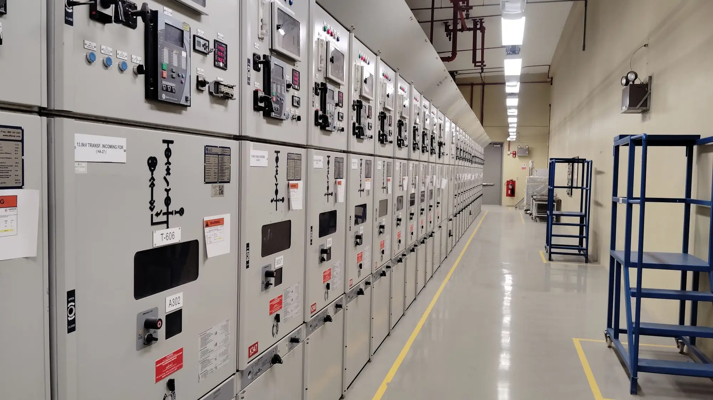

Plant areas in view. Rotating equipment understood.
A generating station is large, loud and full of rotating plant. Video AI helps keep work at height and restricted areas in view, and sensor analysis helps spot change in cooling and auxiliary equipment.
Generation equipment and auxiliary systems need different kinds of attention.
Generation equipment and auxiliary systems offer different monitoring opportunities, with analysis tailored to the asset and the operating load. A fan, a feedwater pump and a motor each tell their story in different measurements.
Planned maintenance periods bring their own risk: more people, more work at height, and more areas that are normally closed.
Recognise activity around designated plant areas.
Identify entry into restricted equipment zones, or monitor defined activity such as work at height during planned maintenance and scheduled operating periods.
- Entry into a restricted equipment zone
- Work at height during planned maintenance
- Movement in a monitored area outside scheduled periods
Investigate changes in cooling and auxiliary equipment.
Analyse fan, motor and pump behaviour to recognise abnormal patterns that may indicate developing mechanical or performance issues, interpreted against operating load.
Relevant inputs
- Vibration
- Bearing temperature
- Current
- Speed
- Pressure
Representative assets
- Cooling fans
- Feedwater pumps
- Motors
- Heat exchangers
Generation sites are connected well beyond the fence line.
Control, protection and monitoring systems link plant, contractors and remote support. Adding analysis is a good moment to check what is connected and who can reach it.
- 01
Asset visibility
A current inventory of the plant controllers and gateways that monitoring will read from.
- 02
Remote and vendor access
Defined, controlled routes for equipment suppliers and remote support.
- 03
Segmentation
Boundaries that keep monitoring flows away from control networks.
Start with one area. Or one fan, pump or motor.
- 01
01
Understand
Name the plant area or the auxiliary asset, and list the cameras and instruments already in place.
- 02
02
Develop
Define area events and activity at height, or the load-aware baselines for the equipment.
- 03
03
Validate
Review behaviour against agreed scenarios, including a planned maintenance period.
- 04
04
Deploy
Send alerts to the right contacts and refine with your operations and maintenance teams.
A typical first project is one fan, pump or work area.
At a generating station the first project works best when it matches something that is planned: one auxiliary asset, or one area during a maintenance period.
- 01
Scope
One cooling fan, feedwater pump or motor, or one restricted equipment zone. Behaviour is read against operating load, so the load range is part of the scope.
- 02
Data to start with
Vibration, bearing temperature, current, speed and pressure for the asset, with load or output alongside. For an area, existing cameras and the schedule of planned work.
- 03
Who is involved
A reliability or maintenance engineer, the shift or outage lead for the area, and a controls or OT contact for access to plant data.
- 04
A successful evaluation
Load-aware baselines separate normal variation from real change, activity-at-height and zone alerts match the permits in force, and the maintenance team trusts the supporting observations.
Common questions about power generation
Can video AI recognise work at height?
It can recognise a configured activity in a defined area, such as work at height during a planned maintenance period, and notify the designated contact. Rules are set around your site's requirements and reviewed with your team.
Which power-plant equipment can sensors cover?
Cooling fans, feedwater pumps, motors and heat exchangers are typical examples where suitable diagnostic data exists. Which assets are practical depends on the measurements available and the operating conditions.
How does operating load affect the analysis?
Strongly. Readings are compared with relevant operating conditions, so that a change caused by load is not mistaken for a developing fault. The analysis is tailored to the asset and its load.
Is this proven at power stations?
These are illustrative applications, not customer deployment claims. We describe how a relevant application could work and agree with you how it will be judged before it is connected to operations.
What about OT security for a generating site?
We scope asset visibility, remote and vendor access and segmentation alongside monitoring. We make no compliance claims; the goal is that new data feeds do not widen who can reach plant systems.
What does a first step look like?
One area or one asset. Tell us the fan, pump or plant area that matters, and we shape a demonstration and agree how it will be assessed with your team.
Tell us which area or asset matters. We will shape a demonstration around it.
Illustrative applications, not customer deployment claims.